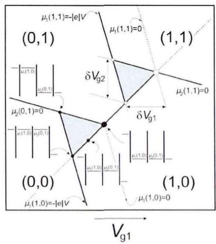

物理图像
电荷稳定图（charge stability diagram）是栅压空间到量子点平衡电荷占据的映射：固定其他电极，扫描两个（或更多）栅压，每一点记录使系统能量最低的电荷组态 。同一条目内部的 固定不变，称为稳定区；相邻稳定区之间的边界是电荷态简并线，电子可在此隧穿进出，故在输运或电荷传感信号中表现为一条条”隧穿线”。
以最常用的串联双量子点为例，取左、右柱塞栅压 、 为坐标轴。源漏接地（）时，基态电荷组态是同时满足 与 的最大 ，即总静电能 最小的组态。相图形态由点间耦合电容 与点总电容之比控制：
- 弱耦合（）：两点互不影响，相图退化为横竖两组平行线构成的矩形网格，相当于两个独立单点的库仑阻塞峰各自扫描的叠加；
- 中间耦合（）：矩形顶点被”劈开”，相图变成六边形蜂窝状，蜂窝图（honeycomb diagram）由此得名——这是实验中最常用的人工分子（artificial molecule）工作区，论文中取 为代表；
- 强耦合（）：两个点在静电上无法区分，系统等价于一个电子数为 、总电容更大的单量子点，相图退回一族斜向平行线。

点间耦合强度 不同时双量子点电荷稳定图的演化
理论模型
电容网络与双点静电能
双量子点的经典描述是常相互作用模型的电容网络版本：点 1 经电容 接源极、点 2 经 接漏极，各自经 、 接柱塞栅，两点间由互电容 耦合（忽略交叉电容时 只作用于点 1）。定义各点总电容 、，对电容矩阵求逆可得三个特征能量——两点各自的充电能与点间静电耦合能：
系统静电能为
其中栅压项
常数项只含栅压的二次项，不影响电荷态边界。两个极限行为可直接从 读出： 时 ， 分解为两个独立单点能量之和； 时系统等价于电荷数 的单点。
电化学势与蜂窝边界
对 做差分得到两点的电化学势：
稳定区的三类边界由简并条件给出（取源漏为零电势参考）：
- 点 1 加电子线：，斜率
- 点 2 加电子线：，斜率
- 点间转移线： 与 简并，即 ，斜率
由于 ，两组加电子线一组陡峭、一组平缓，而点间转移线呈对角走向；三类线两两一组围成六边形蜂窝原胞，原胞顶点即三相点。 时 ，加电子线分别趋于竖直与水平，蜂窝退化为矩形网格——蜂窝形变本身就是 的直接度量。
隧穿耦合与 Hubbard 模型
纯经典图像中边界是锐利的直线。计入点间隧穿耦合 后， 与 杂化成键态与反键态，能级劈裂为 ；在蜂窝图上表现为三相点附近的点间转移线发生弯曲（反交叉），弯曲程度直接标定 的大小。更系统的量子描述是 Hubbard 模型：
其中 为第 点的粒子数算符，、 为点内与点间库仑相互作用。它与常相互作用模型存在映射 、（ 为所有等效电容之和）：去掉跃迁项 时回到经典蜂窝图；保留 时不同 使反交叉点位置与形貌改变，与实验更吻合。只做电荷态调控时经典模型已足够，需要精确描述点间隧穿过程时则须使用 Hubbard 模型。
三相点与偏压三角形
零偏压下，允许电流流过双点的条件是源、两点、漏的化学势全部对齐：。这在蜂窝图中只在三条边交汇的顶点满足，称为三相点（triple point）。三相点分两类：
- 电子型：电子沿”源极 左点 右点 漏极”顺序隧穿；
- 空穴型：等效于一个空穴沿反方向通过双点。
两个三相点之间（点间转移线上）电子处于 与 的混合态，无法定义属于哪一点。
施加有限源漏偏压 后，简并条件放宽为偏压窗口内的一组不等式，每个三相点在相图上展开成一对三角形区域——偏压三角形（bias triangle）。三角形的三条边分别对应 与源极费米面对齐、两点化学势互相对齐、 与漏极费米面对齐；边长正比于偏压大小。三角形尺寸是提取杠杆臂（lever arm）的标准手段：沿栅压方向量出三角形边长 ，则
即栅压轴上的三角形宽度经杠杆臂换算后恰好等于所加偏压。偏压进一步增大时激发态进入窗口，三角形内出现激发态输运线，可用于读取单态–三重态量子比特等体系的能级间距。除偏压三角形外，有限偏压下充电线的宽度本身就等于输运窗口 ——据此可从同一张图提取全部交叉杠杆臂与充电能（Pd 栅 Si/SiGe 双点的早期范例：，见隧穿耦合词条的输运谱学提取一节）。
参数与量级
| 量 | 典型值 / 标度 | 说明 |
|---|---|---|
| 耦合电容比 | （弱）/ （人工分子区）/ （强） | 决定相图从矩形网格到蜂窝再到单点极限的演化 |
| 三相点间隔 | $\Delta V_{im}= | e |
| 杠杆臂 | ；实测 （Si/SiGe 三量子点，库仑菱形法） | 栅压–能量转换系数，由偏压三角形或[[fundamentals/coulomb-diamond |
| 隧穿劈裂 | 由三相点附近转移线弯曲程度标定 | 反交叉形貌是自动调点中判断耦合强弱的特征 |
| 典型扫描窗口 | 量级 | 神经网络识别用的单张子图尺寸（约 1.5 mV/像素） |
测量方法
直接输运：测量通过双点的源漏电流或微分电导。优点是直接反映输运条件；缺点是只在三相点与偏压三角形附近有信号，蜂窝内部一片”黑”，且少电子区电流常低于噪声。
电荷传感：用邻近的QPC 电荷传感器（或 SET）感知点内电子数的离散跳变，可在整个相图上描出全部电荷转移线，是绘制蜂窝图的主流方案。通过在相图上从耗尽区向目标区域数穿过的充电线数目，可以确定每个蜂窝格的绝对电子数 。射频化后即为射频反射测量。
腔探测：将双点耦合到微波谐振腔，用反射幅值与相位读取蜂窝图。其独特优势是在传统直流输运完全测不到信号的区域（如源漏隧穿率过低时），腔响应仍能灵敏区分电荷态；且腔对蜂窝图不同边界（源漏线与点间转移线）的响应不同，可直接区分跃迁类型。论文中用腔相位响应测得三量子点电荷稳定图，进一步观测到三个点化学势同时简并的四相点（quadruple point）。
需要注意，传感器响应曲线、电荷噪声引起的漂移与测量带宽滤波都会改变图像外观，不能仅凭视觉模板对电荷态下结论。
阵列推广与自动调控
个量子点的完整稳定图是 维栅压空间中的分界面结构：双点时是线段分隔电荷态，三点时已经是三维空间中的面，实验上只能取二维切片观察。三量子点的二维切片中出现多条不同斜率的源漏隧穿线相交，形成八个三相点；调节势垒使两条点间转移简并重合时，八个三相点演化为四个三相点加两个四相点，四相点处四个电荷态能量简并——这是三量子点系统可调性的直接证据，也支撑量子元胞自动机等现象的观测。
维数灾难使人工读图不可行：二维切片必须对所有栅对两两测量，信息量随点数爆炸。工程上的解决方案是用交叉电容矩阵构造虚拟电极，把每个点的化学势方向正交化后再扫描；分析端则用神经网络做电荷态识别：以”隧穿线是否存在”标记电子数变化、以反交叉点形貌判定欠耦合/适中耦合/过耦合，从最后一条电荷转移线的位置定位少电子区，支撑自动调控流水线。
与其他概念的关系
- 库仑阻塞是稳定区内部电子数固定、电流为零的物理根源；库仑菱形是单点稳定图在栅压–偏压平面上的对应物。
- 常相互作用模型给出蜂窝几何的全部经典预言；电化学势 的简并条件定义了每条边界。
- 充电能 决定蜂窝沿栅压方向的周期，点间耦合能 决定原胞被劈开的间距。
- 隧穿耦合 使三相点附近出现量子弯曲，其大小既由电荷比特杂化能决定，也可从反交叉形貌读出。
- 稳定图是光子辅助隧穿谱、电荷–光子耦合测量的共同坐标系：这些实验都固定在蜂窝图的特定位置（如点间转移线中点）进行。
- 它是量子点阵列规模化中的核心数据结构，配合虚拟电极与自动调控算法使用。
参考文献
- 蜂窝图、三相点与偏压三角形的系统实验叙述：van der Wiel et al., RMP 74, 801 (2002)、Hanson et al., RMP 79, 1217 (2007)。
- 稳定图作为自动调点数据结构：Kalantre et al., npj QI 5, 21 (2019)。
完整文献库（含各篇站内全文页）见 参考文献库。